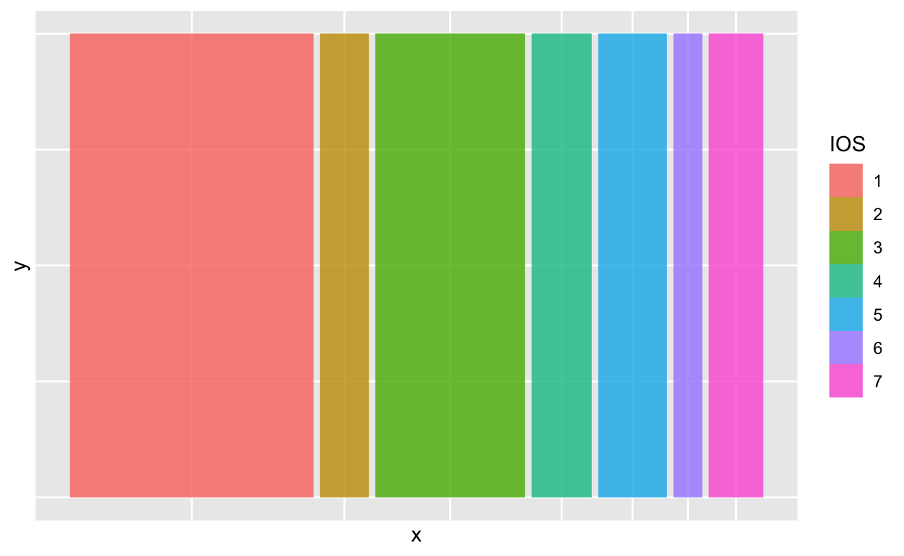
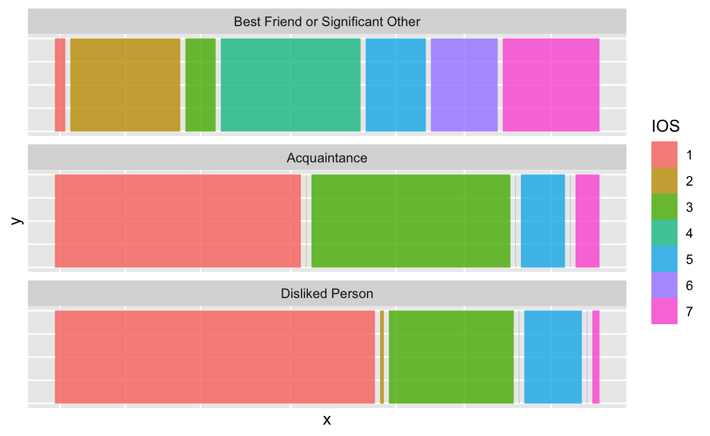
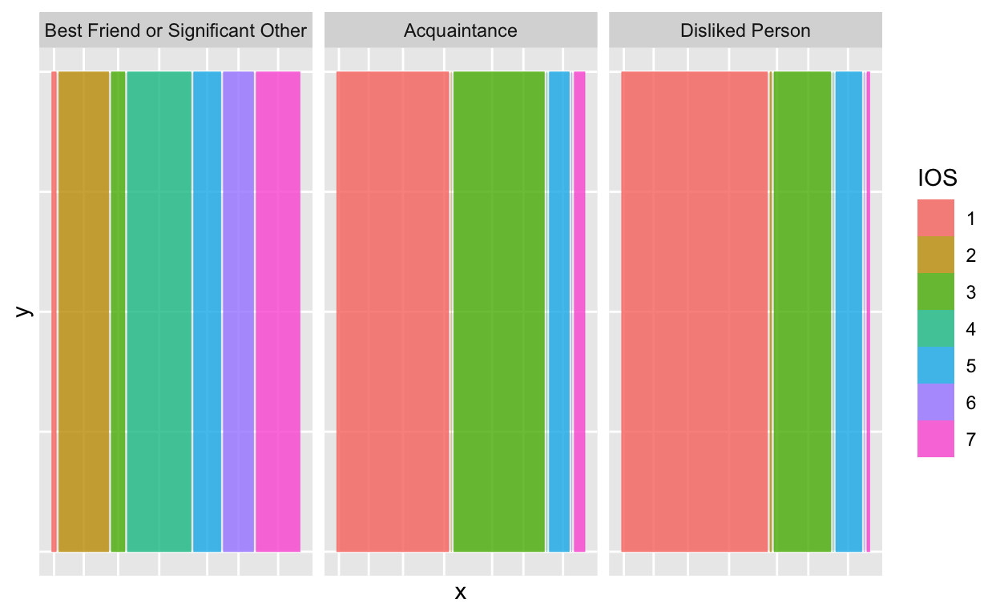
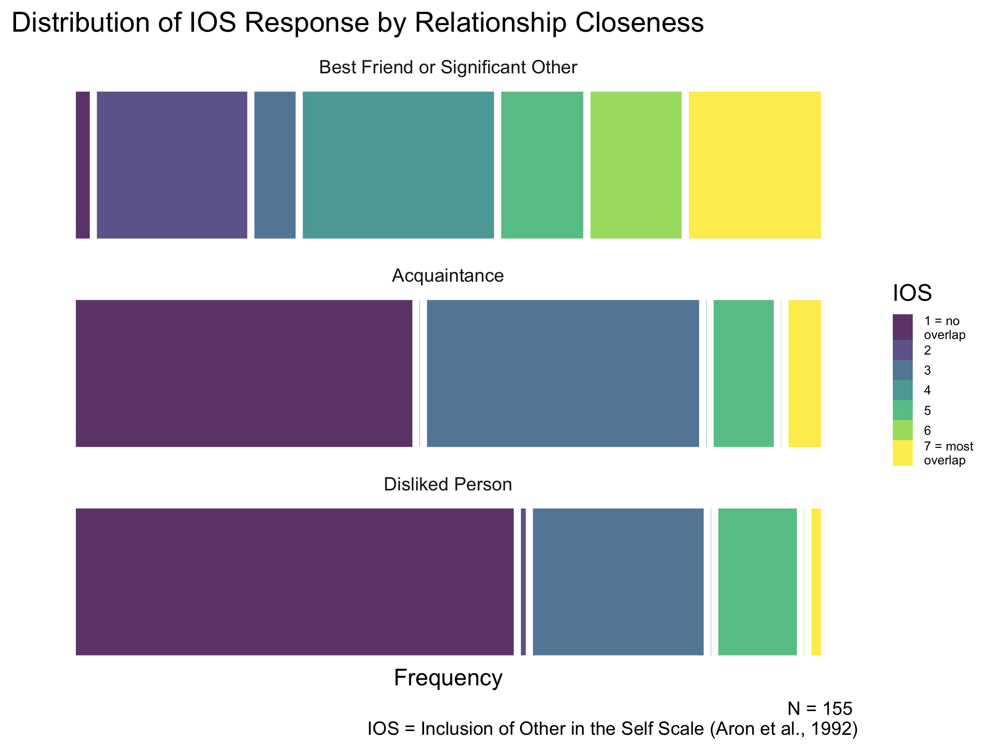

Mosaic plot to visualize frquency response for the Inclusion of Other in the Self Scale (IOS)
I have a dataset that examines how individuals evaluate their social relationships that vary in the degree of closeness – a person they are close with, an acquaintance and a dislike person – and the extent to which they report a self-other overlap with that person. Self-other overlap, in close relationship can be broadly defined as the extent that one sees the other person as part of the self, a sense of shared identity or interconnectedness (Aron et al., 1991).
Participants completed measures of relationship closeness and self-other overlap for all three relationship targets:
I hope to visualize my relationship data through a series of visualization on my blog. These series of visualizations also serve as a project for the class EDLD610, Communicating and Transforming Data taught by Daniel Anderson at the University of Oregon.
For the first visualization, I want to visualize the frquency of responses that participants (N = 155) selected for the Inclusion of Other in the Self Scale (Aron et al., 1992; IOS) for the different targets that varied in closeness. I hypothesize that participatns are more likely to indicate closeness – greater overlap in their cricles – in the close relatioship (a best friend or significant other) compared to an acquaintance or a disliked person.
The IOS is a one item measure consisting of seven pair of circle – with one circle representing the self and the other representing another person – that vary in the extent to which the circle overlap with each other.
1 = Self and Other as separte circles that do not overlap (top left)
7 = Self and Other as the most overlapped cirle (bottom right)
I will use the ggmosaic package to create a Mosaic Plot to visualize the frequency of IOS response from participants for the three different relationships.
The intended audience of the plot is the scientific community and more specifically I can see this type of visualization working well in talks, presentations and poster sessions. I can also see that if the plot was printed in black and white, it could potentially be difficult to interpret, making it less effective to include in journal publication.
The intended message is that for self-other-overlap as measured by the IOS, most participants will select no to barely any overlap between themselves and an acquaintance. This effect is even more pronounced for a disliked person, with more than half of the participants selecting no overlap with the disliked person. Interestingly, for the close target (Best friend or significant other), participants are much more variable at utilizing the IOS scale, suggesting that there are variability within individuals in how they view the relationship between themselves and the person they are close with.
Load packages
#General packages
library(here)
library(ggplot2)
library(tidyverse)
library(readr)
library(reactable)
library(knitr)
#Mosaic plot
library(ggmosaic)Load and display the data
d <- read_csv(here::here("data", "self_other_overlap_data.csv"))
reactable(round(d, 2),
height = 400,
striped = TRUE,
compact = TRUE,
outlined = TRUE)Data wrangling
#data wrangling
mosaic_d <- d %>% select(contains("IOS")) %>%
pivot_longer(1:3, names_to = "relationship", values_to = "IOS") %>%
mutate_if(is.numeric, as.factor) %>%
mutate(relationship = as.factor(relationship)) %>%
mutate(relationship = recode(relationship, "close_IOS" = "Best Friend or Significant Other",
"acq_IOS" = "Acquaintance",
"dislike_IOS" = "Disliked Person"),
relationship = fct_relevel(relationship, "Best Friend or Significant Other",
"Acquaintance",
"Disliked Person"))
head(mosaic_d)
# A tibble: 6 x 2
relationship IOS
<fct> <fct>
1 Acquaintance 3
2 Disliked Person 1
3 Best Friend or Significant Other 6
4 Acquaintance 1
5 Disliked Person 1
6 Best Friend or Significant Other 4 This is the data I intended to summarize with my mosaic plot
mosaic_table <- mosaic_d %>%
group_by(relationship, IOS) %>%
drop_na() %>%
count
knitr::kable(mosaic_table)| relationship | IOS | n |
|---|---|---|
| Best Friend or Significant Other | 1 | 3 |
| Best Friend or Significant Other | 2 | 33 |
| Best Friend or Significant Other | 3 | 9 |
| Best Friend or Significant Other | 4 | 42 |
| Best Friend or Significant Other | 5 | 18 |
| Best Friend or Significant Other | 6 | 20 |
| Best Friend or Significant Other | 7 | 29 |
| Acquaintance | 1 | 73 |
| Acquaintance | 2 | 0 |
| Acquaintance | 3 | 59 |
| Acquaintance | 4 | 0 |
| Acquaintance | 5 | 13 |
| Acquaintance | 6 | 0 |
| Acquaintance | 7 | 7 |
| Disliked Person | 1 | 95 |
| Disliked Person | 2 | 1 |
| Disliked Person | 3 | 37 |
| Disliked Person | 4 | 0 |
| Disliked Person | 5 | 17 |
| Disliked Person | 6 | 0 |
| Disliked Person | 7 | 2 |
At the most basic level, the mosaic plot summarized the frequency that particiants selected each of the seven pair of circle. With 1 being the self and the other as separate circles that do not overlap to 7 being the self and other as the most overlapped circle. The first iteration of the plot simply showed the overall frequency collapsed across the three different social relationships. Given the difference in relationship closeness between the three social relationship - close person, acquaintance, and disliked person - the visualization will be more meaningful if it was separated by relationship type.
ggplot(data = mosaic_d) +
geom_mosaic(aes(x = product(IOS), fill=IOS), na.rm=TRUE) 
For the second version of the mosaic plot, I facet wrapped by relationship to better differentiate the IOS response participants were selecting for the different social relationship. I also decicded to facet wrap by row rather than column. As seen below, the facet wrap by column produced very narrow bands making some of the lower frequency count columns difficult to see.
The second version of the plot conveys the overall data but the current plot would not be able to stand-alone. There is no title for the plot, the X and Y axis title has no meaning, and it would be difficult to interpret the values in the IOS legend. Aesthetic wise, the gray box and gridline within each mosaic plot distract from the overall mosaic plot.
ggplot(data = mosaic_d) +
geom_mosaic(aes(x = product(IOS), fill=IOS), na.rm=TRUE) +
facet_wrap(~relationship, nrow = 3)
When facet wrap by column, it is dificult to see the bands with lower frequency, making the plot less effective at communicating how participants’ are rating their percieved self-other-overlap with the different targets.
ggplot(data = mosaic_d) +
geom_mosaic(aes(x = product(IOS), fill=IOS), na.rm=TRUE) +
facet_wrap(~relationship, ncol = 3)
In the final version of the plot, I made aesthetic and information related changes to increase the visual aesthetic and interpretation of the mosaic plot. The plot can now stand alone and be interpretable.
theme_minimal() and set panel.grid = element_blank() to clean up the mosaic plot.
viridis<- c("#440154ff","#43377fff","#31668dff","#21908dff","#37b578ff","#8fd543ff","#fde725ff")
ggplot(data = mosaic_d) +
geom_mosaic(aes(x = product(IOS), fill=IOS), na.rm=TRUE) +
facet_wrap(~relationship, nrow = 3) +
labs(x = "Frequency",
y = "",
title = "Distribution of IOS Response by Relationship Closeness",
caption = "N = 155 \n IOS = Inclusion of Other in the Self Scale (Aron et al., 1992)") +
theme_minimal(20) +
theme(plot.title.position = "plot",
panel.grid = element_blank(),
legend.text = element_text(size = 11)) +
scale_fill_manual(breaks = c("1", "2", "3", "4", "5", "6", "7"),
labels = c("1 = no \noverlap", "2", "3", "4", "5", "6","7 = most \noverlap"),
values = viridis)